SOCIAL MEDIA DATA ANALYSIS · 小组项目
什么样的健身分享更容易获得点赞？ Keep 社区帖子文本、点赞表现与评论互动网络分析
第【待填写】组
课程：社交媒体与网络分析
摘要 本研究以Keep社区100位作者的9,532条帖子及去重后的11,595条评论为样本，考察文本表达与互动反馈的关系。研究首先将正文转换为词典特征并估计作者与日期固定效应模型，继而通过NMF主题分析、逐作者剔除和两类样本外预测实验检验结果，最后结合评论时序与回复角色分析互动网络。
五项核心文本特征的联合检验不显著（p=0.130），新增解释度为0.065个百分点。积极表达词呈负向关联，但BH校正后q=0.079，PPML区间也包含零。主题回归未提供更明确的关联证据；加入词典或字符文本后，两种留出评估的误差变化区间均包含零，未显示稳定的预测增益。
已采集的明确回复中，89.0%由帖主发给其他用户，表明交流主要围绕帖主展开。网络前10位账号接收54.0%的互动，但该比例和互惠率随评论窗口变化。总体而言，现有数据尚不足以支持固定的高赞表达策略；更完整的曝光、内容及关系记录有助于进一步检验这一问题。
关键词：健身社区；文本表达；点赞；固定效应模型；互动网络。
Keep 社区文本与互动网络分析 · 第【待填写】组 01 / 29 01 · 研究背景与意义
健身社区中的内容表达与互动反馈 健身社区既是用户记录运动的空间，也是分享感受、交流经验和获得同伴反馈的场所。点赞作为一种可观察的互动行为，为研究内容表达与社区反馈的关系提供了切入点。不过，点赞还受到作者既有受众、媒体形式及曝光机会等因素影响。因此，有必要在控制相关因素后，考察文本特征与点赞数之间的关系。
Richardson等（2010）的随机试验发现，增加在线社区功能有助于降低项目流失，但组间步数增幅未呈现显著差异。[1] 这说明社区参与和运动行为变化需要分别衡量。据此，本研究将分析范围限定为平台内的互动反馈，研究结论不延伸至运动坚持、健康或体重变化。
研究问题 编号 可检验问题 分析路径 RQ1 样本帖子、表达方式及点赞如何分布？ 描述统计、正文分词与词汇命中统计 RQ2 同一作者不同帖子的文本特征与点赞是否相关？ 作者与日期固定效应回归；稳健性比较 RQ3 采集到的评论如何连接用户？互动集中在哪里？ 有向加权网络、互惠率、接收集中度 RQ4 文本特征能否改善样本外点赞预测？ 时间留出、作者分组五折、配对误差区间
研究预期与分析定位 自律与目标相关词汇可能使运动经历更易理解，社交称呼和互助表达可能为读者提供参与交流的线索。本研究将这些解释作为待检验的研究预期。 积极表达与问号的关联方向不作预设；正文长度用于衡量表达规模。上述四类二元特征与长度共同构成五项核心检验。 词典与模型设定在本次首次拟合前确定，并完整报告各项结果。由于未进行事前注册，研究定位为探索性分析。 方法参考：《内容分析与自然语言处理》第10、14、18页关于内容分析与文本预处理的讨论。[3]
主题建模、预测对照、作者剔除及评论时序为2026-10-17追加的探索性分析，保留原五项核心检验作为主分析。主题数、预测划分及正则化强度在本轮首次拟合前固定；主题名称和基准依据文本内容与频数确定。
Keep 社区文本与互动网络分析 · 第【待填写】组 02 / 29 02 · 数据来源与清洗
数据来源、样本范围与清洗 文件 粒度与规模 用途 sample_post_2022.csv 每行1帖；9,532帖；100位作者 全部描述统计与回归 sample_comment_2022.csv 原始13,511行；去重后11,595条评论 仅用于评论覆盖说明与网络 KeepData_dictionary.pdf 课程提供的字段解释 确定ID、点赞、父评论与直接回复对象
数据核查与处理 步骤 发现及处理 主键与重复 帖子ID全部唯一。评论ID有1,916行重复；逐字段验证没有冲突，按cmtId保留1条。 表关联 去重后的评论均能关联到帖子。1,323帖有采集到的评论；其余8,209帖的评论覆盖情况未知，保留为缺失。 时间 原字段以Z结尾，按UTC解析；发帖日期、时段统一转换为Asia/Shanghai。北京时间末尾跨至2021-01-01。 正文 3,984帖的content为空。保留这些帖子，将文本计数设为0，并以has_text标记是否有可用正文。 口径异常 8,286帖的likes大于viewCount（86.9%），两个字段的统计口径与对应关系不明。因此不计算点赞率，也不以浏览数作为计数模型的曝光量偏置项（offset）。 极端值 主模型保留全部观测；在稳健性检验中单独剔除点赞最高1%的帖子，检验极端值对结果的影响。
观测时间与文件命名 帖子实际发表于2020-11-01至2020-12-31（UTC），评论最晚延续至北京时间2021-08-26。分析以实际时间字段为准。由于数据未提供统一采集时点，各帖点赞的累计观察时长无法确定。
数据来源与原文件SHA-256保存在results/summary.json；匿名作者编号及建模特征保存在results/post_features.csv。
Keep 社区文本与互动网络分析 · 第【待填写】组 03 / 29 03 · 数据覆盖
正文缺失与内容形式、作者均有关联 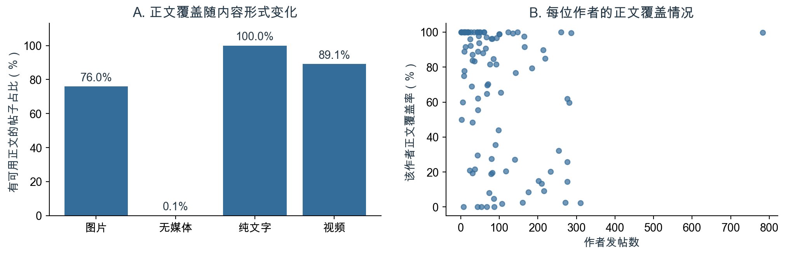
图1 不同内容形式的正文覆盖率，以及100位作者的发帖数与正文覆盖率。覆盖率按原始content是否存在可见字符计算。 内容形式 帖子数 有可用正文 正文覆盖率 图片 5,790 4,399 76.0% 无媒体 2,493 3 0.1% 纯文字 301 301 100.0% 视频 948 845 89.1%
正文缺失并未均匀分布在不同形式的帖子中：“无媒体”帖的正文覆盖率仅为0.1%，图片帖为76.0%，视频帖为89.1%，纯文字帖则为100%。这些差异可能与记录生成方式或采集逻辑有关，现有字段不足以确认具体原因。
作者之间也存在明显差异：5位作者的帖子均无可用正文，26位作者的帖子均有正文，作者正文覆盖率的中位数为84.3%。因此，正文缺失不能简单视为独立、随机发生的现象。原模型保留缺失指示变量和内容形式控制，并以“仅可见正文”设定进行比较；相关结果仍仅适用于当前可观测的数据。
“有可用正文”包含仅有表情或平台标记的记录。清理后有非空正文的帖子为5,414条；后续主题模型进一步限制有效词数。
Keep 社区文本与互动网络分析 · 第【待填写】组 04 / 29 04 · 描述统计
点赞分布长尾明显，均值高于中位数 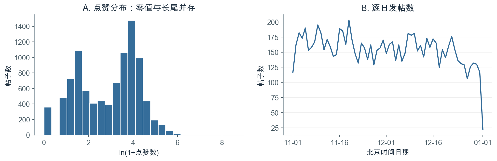
图2 全部9,532帖的点赞分布与北京时间逐日发帖数。首末本地日期为不完整日，末端下降不能解释为活跃度骤降。 变量 均值 中位数 95分位数 最大值 点赞数 37.05 25 109.4 5126 记录浏览数 70.61 2 39.0 383414 收藏数 0.90 0 1.0 3387 清理后正文字符数 15.64 3 57.0 1202
样本帖子的平均点赞数为37.05，中位数为25，最大值为5,126，零点赞帖子占3.8%。点赞方差约为均值的164.8倍，反映出明显的离散性和长尾分布。主模型采用ln(1+点赞数)缓和极端值的影响，并通过聚类稳健推断与计数模型检验结果。
作者之间的发帖量差异较大：发帖数中位数为66，最多者发布783帖。考虑到同一作者的帖子可能具有相关的未观测特征，回归标准误按作者聚类；同时采用作者等权的设定，检查发帖较多的作者对估计结果的影响。
字符数为去URL、成对课程后缀、方括号表情及空白后的字符数；并非纯汉字数。上述分位数基于所有帖子，含无可用正文者。
Keep 社区文本与互动网络分析 · 第【待填写】组 05 / 29 05 · 描述统计
不同内容形式的点赞表现存在差异 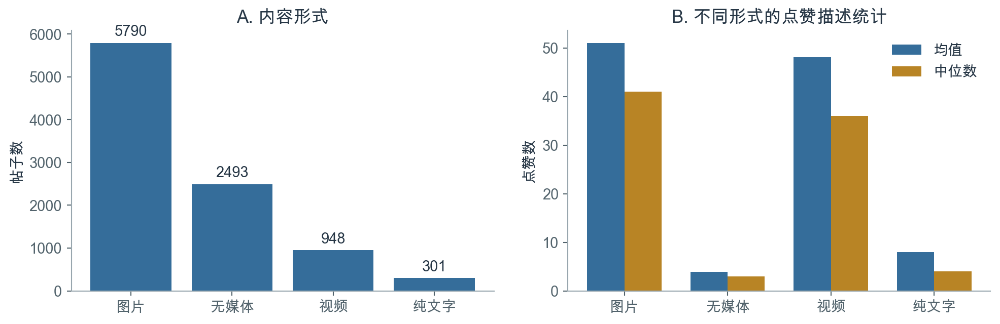
图3 内容形式及其点赞均值、中位数。类别是原始contentTypeStr，不等同于是否有正文。 形式 帖子数 占比 平均点赞 点赞中位数 图片 5,790 60.7% 51.03 41 无媒体 2,493 26.2% 3.91 3 纯文字 301 3.2% 7.94 4 视频 948 9.9% 48.05 36
图片和视频帖的原始点赞数明显高于无媒体及纯文字帖。由于不同形式还可能对应不同作者、业务类型和内容，这一差异只能作为描述性结果。后续回归将内容形式纳入控制，以减少其对文本特征比较的干扰。
回归保留normal、hiking、run、yoga、cycling、direct与share等原始业务类别，并将发帖时段划分为00—05、06—11、12—17、18—23点。日期固定效应用于控制同一天样本共有的变化；各帖累计观察时长不明的问题仍需在解释结果时予以考虑。
输出文件：media_summary.csv、post_type_summary.csv、monthly_summary.csv。北京时间2021年1月仅包含UTC年底跨日的少量帖子，不能与完整月份比较活跃趋势。
Keep 社区文本与互动网络分析 · 第【待填写】组 06 / 29 06 · 文本结构化
正文预处理与变量构建 原始content → 还原换行 → 去URL、课程后缀及表情标记 → 正文字符数与规则匹配 → jieba分词/词频 → 回归特征表
变量 定义与编码 用途 log_length ln(1+清理后非空白字符数) 核心检验1；控制表达规模 self_discipline 含坚持、自律、目标等任一词或明确“第N天”模式=1 核心检验2；自律/目标词命中 social_address 含大家、小伙伴、谢谢、一起等任一词=1 核心检验3；社交称呼/互助词命中 positive_expression 含开心、快乐、喜欢、哈哈等任一词=1 核心检验4；积极表达词命中 question 出现半角?或全角？=1 核心检验5；标点特征 has_text 原content经去空白后非空=1 区分无可用正文与可用正文 has_tag hashTags不等于[]记1 话题元数据；不混入正文词典 emoji_count ln(1+方括号表情标记数) 控制标记表达；不代表全部Unicode表情 course_ref 原文出现Ⓚ记1 控制课程分享痕迹
话题标签作为独立元数据编码，不拼接到正文中参与词典匹配。成对的“Ⓚ…Ⓚ”按课程分享后缀处理，未成对的标记予以保留。方括号表情单独计数，不参与核心词汇匹配。上述处理使正文表达与平台附加标记在变量构建中保持区分。
变量的解释范围 词典命中表示规则检测到了相应的字面表达，未命中则表示未被该规则识别。无可用正文的帖子仍可能通过图片等方式表达，因此has_text=0仅描述正文数据的可用状态。
方法参考：[3]第14、18、24—28页。具体规则见code/analyze.py与text_dictionary.json；文本特征通过postId与帖子数据关联。
Keep 社区文本与互动网络分析 · 第【待填写】组 07 / 29 07 · 编码规则与可解释性
词典编码规则及其解释范围 维度 完整规则 自律/目标词 坚持、自律、打卡、目标、计划、努力、加油、挑战、突破、完成、进步、不放弃、全勤；第[数字或汉字数词]天 社交称呼/互助词 大家、朋友们、小伙伴、你们、一起、互相、互勉、共勉、陪伴、谢谢、感谢、请教、求助、求推荐 积极表达词 开心、快乐、高兴、幸福、喜欢、美好、满足、舒服、棒、赞、愉快、美滋滋、哈哈、嘻嘻、嘿嘿 问号 ? 或 ？；不推断是否真正提问
文本结构化示例 匿名正文节选 生成的结构化信息 “夜跑打卡” self_discipline=1；其余三类二元特征=0 “谢谢你们！……一起开启……” social_address=1；其他维度按各自规则独立判断 “用心感受清晨的美好” positive_expression=1 “今天 你笑了么？” question=1；问号本身不等同于互动请求
词典采用子串匹配：每个维度命中任一项记为1，同一词重复出现不累加，维度之间允许重叠。“加油”归入自律/目标词，以表示激励性表达；积极表达词主要覆盖愉悦或赞许用语。这些变量用于识别特定字面特征，不构成互斥主题分类或完整的情感评分。
此外，采用jieba精准分词，经停用词过滤和帖内词项去重后计算文档频数，以描述语料的主要表达内容。停用词使用课程数据中的BaiduStopwords.txt，并补充少量口语词；本地复现副本位于code/stopwords.txt。高频词统计仅用于描述，不作为额外的假设检验。
本研究采用词典内容分析，使编码规则与回归变量之间保持明确对应。其语义测量局限在文本测量核查部分进一步讨论。
Keep 社区文本与互动网络分析 · 第【待填写】组 08 / 29 08 · 文本描述结果
文本特征的分布与作者覆盖 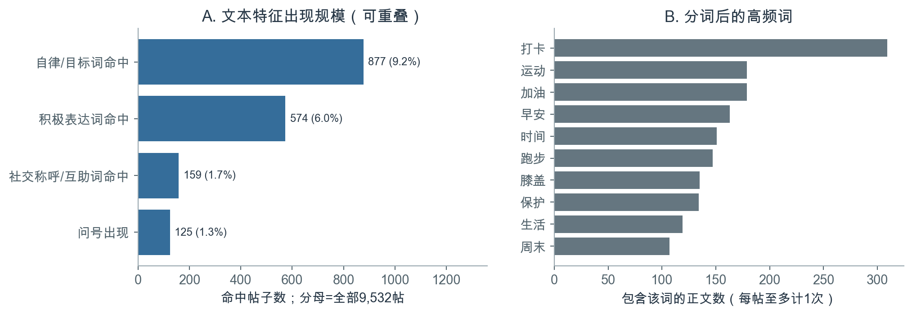
图4 文本特征命中数及高频词。各特征可重叠；正文分词仅分析清理后的可见文本。 特征 命中帖数 全部帖子占比 可见正文占比 有作者内变动的作者数 自律/目标词命中 877 9.2% 15.8% 76 社交称呼/互助词命中 159 1.7% 2.9% 42 积极表达词命中 574 6.0% 10.3% 64 问号出现 125 1.3% 2.3% 32
自律/目标词在全部帖子中的命中率为9.2%；以5,548条可见正文为分母时，命中率为15.8%。社交称呼/互助词和问号出现较少，分别只有42和32位作者在其帖子之间呈现0/1取值变化，能够为作者内比较提供的信息相对有限。
“打卡”“运动”“加油”等高频词与健身记录的语境一致。不过，该描述仅覆盖100位作者的可用文本：41.8%的帖子缺少正文，图片中的文字和视频语音也未进入分析，因而无法据此概括平台整体内容。
高频词为“含该词的帖子数”，每帖至多计1次；不是总词频。特征分母和作者内变动计数见text_features_summary.csv。
Keep 社区文本与互动网络分析 · 第【待填写】组 09 / 29 09 · 探索性主题分析
TF-IDF与非负矩阵分解的主题分析 原词典能够识别事先定义的字面特征，但覆盖范围较窄。为考察词典之外的内容差异，进一步将清理后的正文进行中文分词和停用词过滤，以TF-IDF构建文档—词项矩阵，再采用非负矩阵分解（NMF）提取五种潜在表达模式。[7] 主题数在本次扩展模型首次拟合前固定，不依据点赞结果选择。
NMF将非负矩阵X近似分解为W与H的乘积：W描述每条文档的成分权重，H描述每个成分的词项权重。本研究将成分数设为5，作为便于描述的分析粒度，不将其视为语料唯一或最优的主题划分。
环节 设定 纳入标准 每帖至少含3个过滤后的有效词，并在最终词表中有非零表示。 词项过滤 至少出现于5帖，最高文档比例0.9；词表上限4,000。 模型与命名 NMF设为5个主题；依据关键词及不含点赞指标的正文抽查命名。 权重解释 先校正NMF成分的任意尺度，再归一化文档权重。权重表示相对贡献，不是主题后验概率。 稳定性 另用3个随机种子重复初始化，以成分余弦相似度匹配主题，比较前10关键词。
以2,478条满足词项要求的正文拟合模型，其中8条的成分贡献接近零，不作强制归类；其余2,470帖、86位作者进入主题描述和回归，词表含1,046项。这一子样本覆盖全部帖子的25.9%，对较长、信息较充分的正文代表性更强。
主题名称 主要关键词 主导文档数 主导占比 靠墙静蹲记录 靠墙、膝盖、保护、第二组、第一组、站立 85 3.4% 骑行里程记录 公里、骑行、每日、日常、冷风、广州 85 3.4% 运动与训练交流 运动、时间、简单、减脂、碎片、跑步 1,302 52.7% 跑步与训练打卡 打卡、夜跑、站立、晨跑、靠墙、跑步 113 4.6% 生活感悟与问候 人生、生活、早安、努力、美好、一种 885 35.8%
主导主题为每帖权重最高的成分，五类主导文档互斥；一条正文的软权重仍可分布在多个主题中。
Keep 社区文本与互动网络分析 · 第【待填写】组 10 / 29 10 · 探索性主题分析
主题分布及其作者集中度 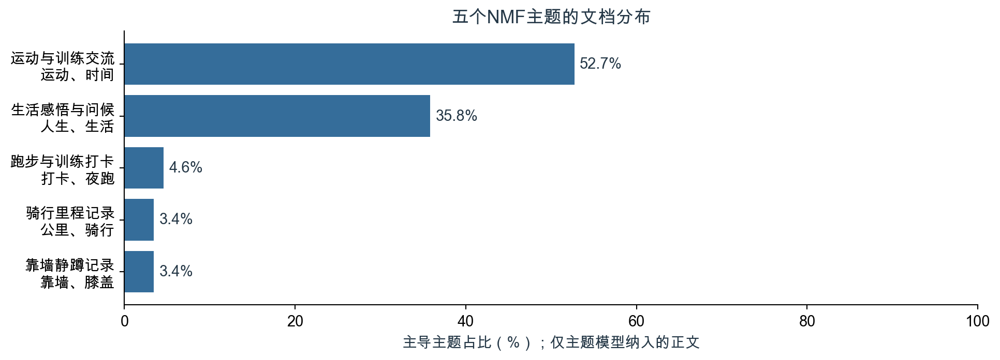
图5 主题模型子样本中五类主导主题的占比。主题命名基于词项与正文内容，不使用点赞数。 “运动与训练交流”和“生活感悟与问候”分别占主导文档的52.7%和35.8%。另有两个规模较小、形式较固定的记录主题：靠墙静蹲记录中，最大作者贡献91.8%的主导文档；骑行里程记录中，该比例为68.2%。因此，这些主题既反映内容差异，也反映特定作者反复使用的表达模板。
相对“运动与训练交流” 系数 95%聚类区间 原始p BH q 靠墙静蹲记录 -0.315 [-0.636, 0.005] 0.054 0.107 骑行里程记录 0.018 [-0.523, 0.558] 0.948 0.948 跑步与训练打卡 -0.471 [-1.048, 0.105] 0.108 0.144 生活感悟与问候 -0.144 [-0.278, -0.010] 0.035 0.107
探索性回归在上述2,470帖中保留原模型控制项，并加入四个主题权重；基准主题按主导文档数确定。四项权重作为独立的探索性检验家族进行BH校正。联合检验p=0.166，各项校正后均未达到5%显著性水平，未提供足够证据支持主题权重在原有控制之外具有明确关联。
三次初始化的前10关键词平均Jaccard为1.000，仅表明对初始化较稳定。表内系数对应主题权重变化1单位；10个百分点的变化对应0.1β。区间以主题特征为给定输入，未计入主题估计的不确定性。
Keep 社区文本与互动网络分析 · 第【待填写】组 11 / 29 11 · 从描述到回归
从组间差异到作者内比较 特征 命中帖平均点赞 未命中帖平均点赞 自律/目标词命中 63.67 34.36 社交称呼/互助词命中 89.96 36.16 积极表达词命中 57.29 35.76 问号出现 111.15 36.07
四类二元特征的命中帖子均具有更高的原始平均点赞数。例如，社交称呼/互助词命中帖的平均点赞约为90，未命中帖约为36。由于这一比较混合了作者受众规模、媒体形式及极端高赞帖等差异，后续通过逐步加入控制项，将分析重点转向同一作者不同帖子之间的条件关联。
逐步建模的比较思路 模型 控制项 比较含义 M1 基础关联 文本特征、内容形式、业务类型、时段、性别、keepValue、kgLevel、会员 不同作者和帖子混合后的条件关联 M2 作者固定效应 M1的帖子层面控制 + 作者虚拟变量；去掉作者内不变属性 同一作者不同帖子的条件比较 M3 主模型 M2 + 北京时间发帖日期固定效应 进一步扣除同一天的共同变化
100位作者的gender、keepValue、kgLevel和memberStatus在样本内均保持不变，已由作者固定效应吸收，因此M2和M3不再重复纳入。作者固定效应有助于控制稳定的作者差异，但粉丝变化、推荐曝光、视觉内容质量及累计观察时长等因素仍无法充分控制。
结果变量的选择 只有1,323帖存在采集到的评论记录，其余帖子的评论覆盖情况未知。因此，帖子层面的回归以点赞数为结果变量；评论数据用于描述已观测的互动网络。
Keep 社区文本与互动网络分析 · 第【待填写】组 12 / 29 12 · 模型与统计推断
固定效应模型与统计推断 ln(1 + likesit ) = αi + δd + β1 ln(1 + lengthit )2 disciplineit + β3 socialit + β4 positiveit 5 questionit + γ′Zit + εit
i表示作者，t表示帖子；α为作者固定效应，δ为北京时间发帖日期固定效应。Z包含正文可用状态、话题标记、表情标记、课程分享标记、内容形式、业务类型和发帖时段。日期依据实际本地时间划分，范围延伸至2021-01-01。
项目 实施方式 估计 普通最小二乘；9532条观测，182个参数，设计矩阵满秩。 标准误 按100位作者聚类；CR1小样本系数修正；t分布自由度99计算p值和95%区间。[2] 多重检验 对五项核心文本系数进行Benjamini–Hochberg FDR校正；控制变量不加入该检验家族。 联合检验 五项文本系数同时为零的聚类稳健Wald F检验。 系数解释 二元变量的exp(β)−1对应“1+点赞数”条件几何均值的相对差异，反映给定控制项后的统计关联。
正文长度采用自然对数形式。当1+正文长度翻倍时，模型对应的1+点赞数几何均值乘以2β1 。这一解释针对对数模型的尺度，不能换算为每增加一个字所带来的固定点赞变化。
模型设定在本次首次拟合前确定，未进行事前注册。聚类稳健推断考虑作者内误差相关和异方差；遗漏变量、抽样选择及因果识别仍属于研究局限。
Keep 社区文本与互动网络分析 · 第【待填写】组 13 / 29 13 · 回归结果
核心文本特征的关联证据有限 核心变量 系数 聚类SE 95%区间 p BH q 正文长度 ln(1+字数) 0.028 0.018 [-0.008, 0.064] 0.130 0.293 自律/目标词命中 -0.119 0.087 [-0.293, 0.054] 0.176 0.293 社交称呼/互助词命中 -0.004 0.064 [-0.131, 0.122] 0.946 0.946 积极表达词命中 -0.086 0.035 [-0.155, -0.016] 0.016 0.079 问号出现 0.108 0.105 [-0.100, 0.316] 0.307 0.383
因变量为ln(1+点赞数)。M3控制作者、日期、内容形式、业务类型、时段及辅助文本标记；N=9,532，作者聚类数为100。表中同时报告原始p值与BH校正后的q值。
自律/目标词、社交称呼/互助词和问号的系数均未达到统计显著水平，其95%置信区间包含零。积极表达词的系数为-0.086，原始p=0.016；经五项核心检验的BH校正后，q=0.079，在5%显著性水平下不再显著。
模型 样本量 R² 调整R² M1_基础关联 9,532 0.563 0.562 M2_作者固定效应 9,532 0.685 0.681 M3_作者与日期固定效应 9,532 0.688 0.682
主模型R²为0.688。相对于保留相同控制项、但不含五项核心文本特征的模型，R²仅增加0.065个百分点，表明这些特征提供的额外解释较少。五项系数的联合检验结果为F(5,99)=1.752，p=0.130，与单项检验反映的有限证据相一致。
结果解释 在现有样本与变量定义下，回归结果尚不足以支持核心文本特征与点赞数存在明确关联。低频特征、词典测量误差及未观测的视觉内容均可能影响估计精度，因此不显著结果也不能证明所有表达方式均无影响。
Keep 社区文本与互动网络分析 · 第【待填写】组 14 / 29 14 · 系数及效应含义
回归系数的量级与解释 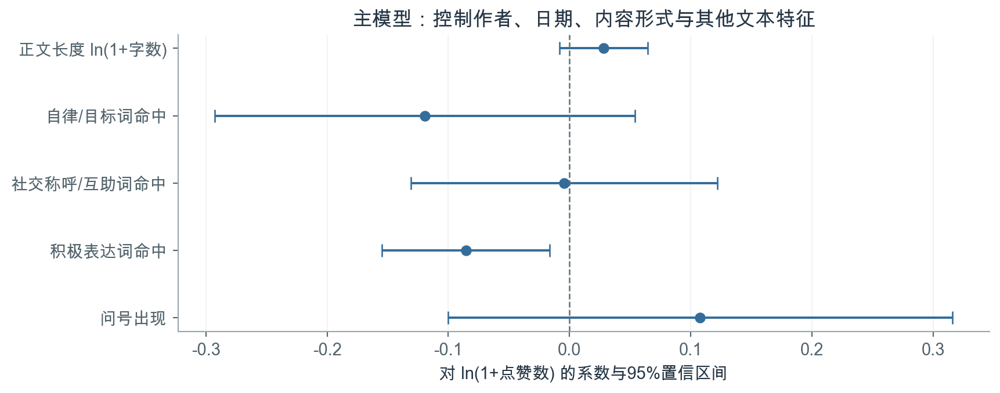
图6 M3五项核心文本系数和按作者聚类的95%置信区间。此处区间未进行多重检验调整；q值见表。 将积极表达词的系数转换到相对差异尺度，其点估计对应“1+点赞数”的条件几何均值低约8.2%，原始95%置信区间为[-14.3%, -1.6%]。这一量级应结合多重检验结果及后续模型比较共同理解，而不宜直接转化为调整表达方式的建议。
积极表达词命中帖的原始平均点赞更高，但回归系数为负，说明未调整的组间比较与控制后的作者内比较并不一致。作者构成和帖子情境可能参与形成这种差异；当前设计无法进一步区分具体机制，也无法将负系数解释为积极表达导致点赞下降。
正文长度的关联量级 当1+正文长度翻倍时，主模型中1+点赞数的条件几何均值点估计约增加2.0%。由于长度系数的置信区间包含零，现有结果不足以确定正文长度的明确关联，更无法推导出最优字数。
完整系数及变换后的区间见regression_coefficients.csv；作者内特征相关性见within_author_feature_correlations.csv。
Keep 社区文本与互动网络分析 · 第【待填写】组 15 / 29 15 · 稳健性检验
积极表达的负关联对模型设定敏感 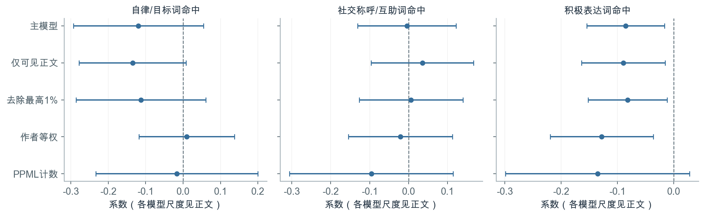
图7 三类词汇在不同规格下的系数与原始95%聚类置信区间。OLS刻画ln(1+点赞数)；PPML刻画算术条件期望点赞数的对数，系数不能直接视作同一估计量。 积极表达词规格 N 系数 95%区间 原始p 主模型 9,532 -0.086 [-0.155, -0.016] 0.016 仅可见正文 5,548 -0.090 [-0.164, -0.015] 0.019 去除最高1% 9,436 -0.082 [-0.152, -0.012] 0.022 作者等权 9,532 -0.128 [-0.219, -0.036] 0.007 PPML计数 9,532 -0.135 [-0.299, 0.028] 0.103
为检验结果对样本与估计方式的敏感性，分别采用四种补充设定：仅保留可见正文的5,548帖、95位作者；剔除点赞最高1%的帖子，保留likes≤227.38的9,436帖；使每位作者的总权重相同；以原始点赞数估计PPML计数模型。PPML保留相同控制项并采用聚类稳健推断，模型已收敛。
积极表达词的负系数在若干OLS设定下仍然存在，但在PPML中未达到统计显著水平，置信区间包含零。结合主模型的BH校正结果，这一负关联仍应视为有待验证的探索性发现。其余词汇的结果也未提供明确的正向关联证据。
表内p值均为各设定的原始p值，稳健性比较用于评估结果的敏感性。完整五项结果见regression_coefficients.csv。
Keep 社区文本与互动网络分析 · 第【待填写】组 16 / 29 16 · 作者影响检验
逐作者剔除后的系数敏感性 作者固定效应可以控制稳定的作者差异，但个别作者仍可能为某些文本特征提供较多变化。为检验这种影响，依次剔除一位作者，重新估计原主模型，共进行100次计算；模型控制项与变量定义保持一致。该检验观察点估计的敏感性，不将100次结果作为额外的显著性检验。
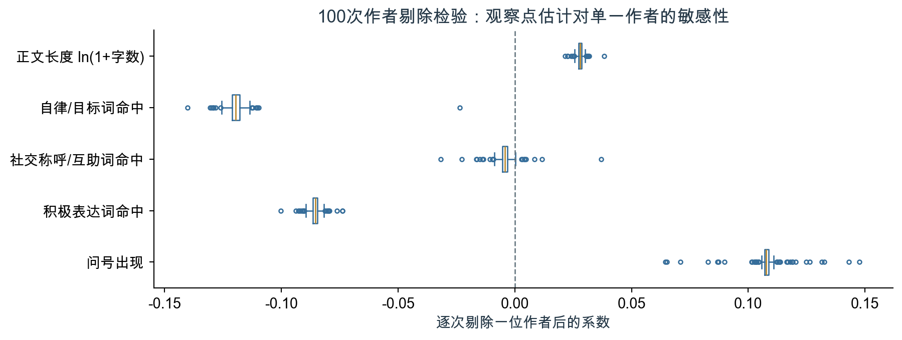
图8 逐次剔除一位作者后的五项核心系数分布。箱体表示中间50%，散点表示箱须之外的结果。 特征 最小系数 最大系数 正向/负向次数 正文长度 0.021 0.038 100/0 积极表达词 -0.100 -0.074 0/100 问号 0.065 0.147 100/0 自律/目标词 -0.140 -0.024 0/100 社交称呼/互助词 -0.032 0.037 11/89
积极表达词在100次剔除中均为负，系数范围为[-0.100, -0.074]，说明其OLS负向点估计并非由单一作者决定。但符号稳定不能替代统计推断，原BH校正和PPML结果仍显示证据有限。社交称呼/互助词在11次剔除后转为正值，与原系数接近零的结果一致。
逐作者结果及以主模型聚类标准误为单位的系数变化见extension_author_influence.csv。
Keep 社区文本与互动网络分析 · 第【待填写】组 17 / 29 17 · 样本外预测对照
文本特征能否改善样本外预测？ 固定效应回归主要回答给定控制项后的关联问题，较高的样本内R²不意味着文本能够改善新样本预测。为补充这一判断，本研究在相同划分下比较四种预测模型，考察逐步加入文本后的误差变化。所有模型设置均在本次留出结果生成前固定，未根据测试集表现调参。
模型 输入与设定 训练集均值 对所有测试帖预测训练集ln(1+点赞数)的均值。 结构化基线 作者编号、性别、Keep值、等级、会员、内容形式、业务类型、时段、星期、日期序号和话题标记。 结构化＋词典 在结构化基线上增加五项核心文本特征、正文可用状态、表情与课程标记。 结构化＋词典＋字符文本 进一步加入正文字符2—4元组TF-IDF，词项至少出现于3条训练帖，最多12,000项。
后三种模型均采用岭回归，正则化参数固定为10。类别编码、数值标准化及TF-IDF词表与逆文档频率均只在训练集中拟合，再应用于测试集。字符表示用于减少对人工词典及分词的依赖。
划分 训练与测试范围 主要回答的问题 时间留出 2020-12-15之前的7,098帖训练，之后的2,434帖测试；测试集含88位作者，其中87位在训练集中出现。 对较晚发布、主要来自已见作者的帖子，文本是否提供增量信息？ 作者分组五折 按作者分为5折，每位作者的全部帖子只进入一个测试折，训练与测试作者不重叠。[8] 对未参与训练的作者，文本是否有助于泛化？
目标为采集时点的累计点赞，作者属性也缺少历史时戳。因此，“时间留出”是回顾性样本外检验，不代表按真实上线时点预测未来7天点赞的效果。
Keep 社区文本与互动网络分析 · 第【待填写】组 18 / 29 18 · 样本外预测结果
留出预测中的文本增益有限 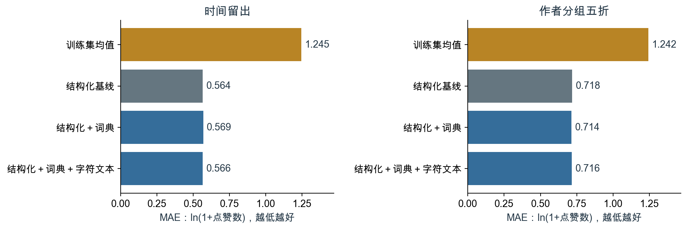
图9 两种划分下四类模型的留出MAE。误差均在ln(1+点赞数)尺度计算，越小越好。 划分 模型 MAE RMSE R² 时间留出 训练集均值 1.2452 1.4100 -0.007 时间留出 结构化基线 0.5641 0.7933 0.681 时间留出 结构化＋词典 0.5687 0.7971 0.678 时间留出 结构化＋词典＋字符文本 0.5656 0.7952 0.680 作者分组五折 训练集均值 1.2417 1.4148 -0.038 作者分组五折 结构化基线 0.7180 0.9837 0.498 作者分组五折 结构化＋词典 0.7141 0.9722 0.510 作者分组五折 结构化＋词典＋字符文本 0.7164 0.9711 0.511
结构化基线在两种划分中均明显优于训练集均值，说明现有作者与帖子元数据具有一定的样本外预测信息。时间留出中，加入词典和字符文本后MAE均未低于结构化基线；作者分组五折中，改进幅度则很小，且不同文本表示的排序并不一致。
两种划分面向不同对象，不宜把误差差距全部归因于单一因素；样本内固定效应R²也不与此表R²直接比较。
Keep 社区文本与互动网络分析 · 第【待填写】组 19 / 29 19 · 预测误差与敏感性
预测增益的不确定性与重复文本敏感性 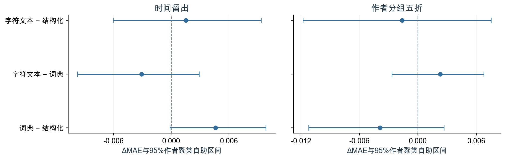
图10 增强模型相对基线的MAE差，负值表示误差降低。区间为2,000次按作者聚类重采样的95%百分位区间。 划分 相对结构化基线 ΔMAE 95%区间 时间留出 词典 +0.0046 [-0.0001, +0.0098] 时间留出 词典＋字符文本 +0.0015 [-0.0060, +0.0093] 作者分组五折 词典 -0.0039 [-0.0112, +0.0027] 作者分组五折 词典＋字符文本 -0.0016 [-0.0118, +0.0075]
在固定的留出预测上，按作者保留全部帖子进行配对重采样，以兼顾同一作者内的相关性和各模型对同一帖的预测差异。所有比较区间均包含零，当前评估未显示明确的文本增益。区间没有重新训练模型，因此仅反映给定预测结果下的评估样本不确定性。
未见正文子集 N 结构化MAE ＋词典 ＋字符文本 时间留出 692 0.6155 0.6253 0.6167 作者分组五折 2947 0.7522 0.7384 0.7447
另限制测试正文至少10个字符，且清理后文本不与该训练集中的正文完全相同，以检查重复模板是否影响判断。时间留出中，字符模型优于词典模型，但仍未优于结构化基线；作者分组中，字符模型未优于词典模型，模型排序未呈现一致优势。这一限制只能排除完全重复文本，不能消除近似改写或共同话题带来的相似性。
Keep 社区文本与互动网络分析 · 第【待填写】组 20 / 29 20 · 文本测量核查
词典编码的语义局限与抽查 为检查字面匹配与语义解释的一致程度，对四类二元特征分别抽取5条命中和5条未命中的可见正文，共形成40个“帖子—特征”检查单元，其中可能包含重复帖子。抽查由Codex辅助完成，未展示点赞数，但规则命中状态可见。由于未采用独立人工双编码，该检查仅用于识别典型误差，不据此估计总体准确率或编码一致性。
例子与现象 规则结果 对解释的影响 “完成”的对象是身体部位配合或画作进度 自律词命中 通用词会产生健身自律语义的误报。 “一起”叙述线下和朋友跑步 社交词命中 不能据此推断面向线上受众的互动邀请。 “OK啦”表示满意 积极词未命中 口语表达可能被词典漏掉。 “我不要面子的吗？”等反问 问号命中 问号不是实际求助或信息需求。
对测量与后续研究的启示 抽查显示，同一词语在不同语境中未必具有相同含义，字面匹配的可复现性也不等于语义测量的有效性。因此，本研究将词典变量解释为字面表达的代理，不据此推断用户自律程度、情绪强度或实际获得的社会支持。抽查发现用于限定结果的解释范围，未据此重新调整词典。
后续可从全部可见正文中随机抽样，在隐藏模型预测与互动指标的条件下，由两位编码者依据预先确定的语义标准独立标注，并评估编码一致性与分类误差。这样可以进一步判断回归中的有限证据在多大程度上与文本测量有关。
40条检查记录见results/text_coding_review.csv；抽样与记录过程见code/analyze.py和code/annotate_review.py。
Keep 社区文本与互动网络分析 · 第【待填写】组 21 / 29 21 · 评论网络构建
评论关系的识别与建图规则 根评论：评论者 → 帖子作者
评论按cmtId去重后，通过postId关联帖子作者。根评论的接收对象为帖主；回复评论优先依据显式replyUserId确定对象，缺失时再利用已观测的直接回复评论ID识别。84次自我互动单独记录并从网络中排除，同一发送者与接收者之间的多次事件合并为一条加权有向边。
转换阶段 规模 去重评论 11595条 时间早于所属帖的评论 0条 无法确定指向对象 0条 自我互动移除 84条 可用互动事件 11511次 = 6609次根评论 + 4902次明确回复 用户对合并后 4069条有向边；2932个有边节点 仅明确回复子网络 1074节点；1271边
网络包含至少参与一条非自环边的用户，100位样本作者中有77位出现在该网络中。其余作者未出现在本次采集的有效互动关系中，并不意味着其在平台上没有社交联系。图表及导出边表均使用稳定的匿名用户编号。
网络分析与回归的关系 评论在发帖后形成，最晚延续至2021年8月。为避免将结果发生后的信息作为发帖前特征，PageRank、入度及互动接收量仅用于描述网络结构，不纳入帖子点赞回归。
方法参考：《社交网络分析简介》第32—37页及《Social Network Influencial》第30、35页。[4][5] 本网络表示已观测的评论指向关系。
Keep 社区文本与互动网络分析 · 第【待填写】组 22 / 29 22 · 网络结构
评论互动网络的连通性与互惠性 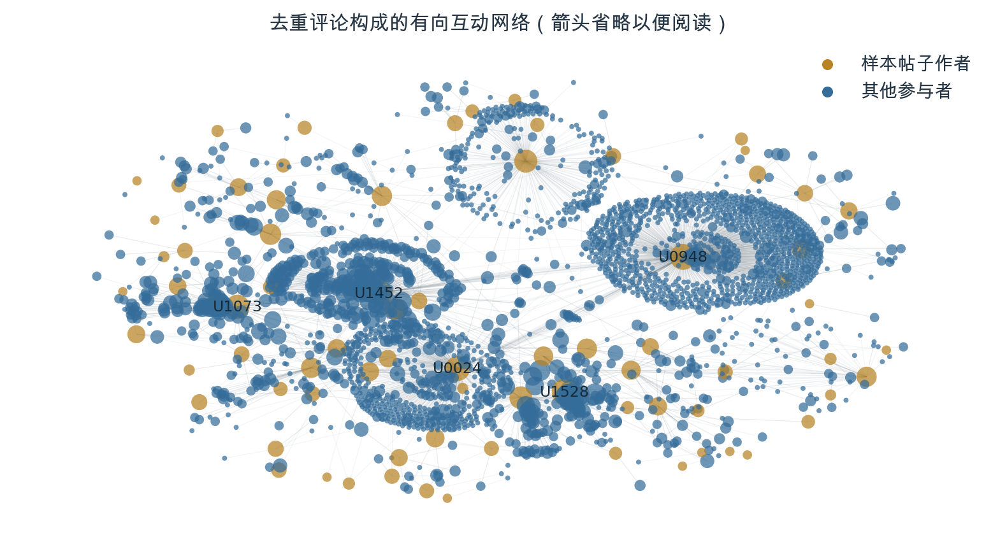
图11 全部2932个有边节点、4069条有向边。为可读性省略箭头；金色为样本帖子作者，蓝色为其他参与者；节点大小按接收事件数的对数缩放。仅标注前5位接收者。 指标 结果 含义 弱连通分量 35 忽略方向后彼此连通的子图数 最大弱连通分量 2768节点（94.4%） 有边节点大部分落在同一弱连通分量 密度 0.000473 4069 / (2932×2931)；稀疏程度受节点抽样影响 互惠率 49.6% 具有反向边的有向边占比，不按事件权重计算 仅明确回复互惠率 29.9% 改变建边范围后互惠率下降
最大弱连通分量包含94.4%的有边节点，表明采集到的互动在忽略方向后形成了较大的连通结构。整体互惠率为49.6%；仅保留明确回复时，互惠率为29.9%。这一差异反映出建边范围对网络指标的影响。由于两个网络的节点集合不同，该比较不对应同一群体在两个时期的行为变化。
网络图采用固定随机种子的弹簧布局，图面距离仅用于展示连接结构。各指标描述本次观测网络，未估计平台总体网络的抽样置信区间。
Keep 社区文本与互动网络分析 · 第【待填写】组 23 / 29 23 · 互动集中度
前10位接收者获得54.0%的互动事件 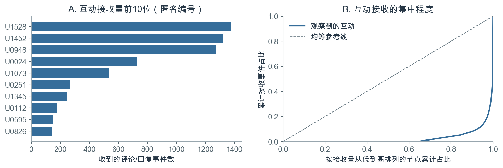
图12 接收事件前10位与累计接收分布。排序和占比均按边权，分母为11511次非自我互动事件；同一用户可重复产生事件。 按接收事件数排序，前10位账号接收了全部非自我互动的54.0%，排名第一的账号接收12.0%。共有61.3%的事件指向样本帖子作者。接收量按评论和回复次数累计，同一用户的重复互动分别计数，因此不同于独立互动用户数。
这一集中度需要结合样本边界理解。评论从100位作者的帖子出发采集，根评论又直接指向帖主，因此这些作者及其活跃互动对象更容易成为网络中心。由此得到的接收量排名适用于描述样本内互动分配，不宜外推为Keep全平台的影响力排名。
点赞与评论反映不同的互动侧面 回归分析未发现核心文本特征与点赞数存在充分、稳定的关联证据；网络分析则显示，已采集评论的接收分布较为集中。两部分分别描述帖子层面的反馈和用户间的互动结构。后续研究若进一步收集受众与关系数据，可以检验内容表达在不同关系背景下是否呈现不同关联。
入度为不同发送者数量，加权入度为接收事件数，PageRank为补充节点指标；完整结果见network_nodes.csv。
Keep 社区文本与互动网络分析 · 第【待填写】组 24 / 29 24 · 评论时序与角色
多数明确回复由帖主发出 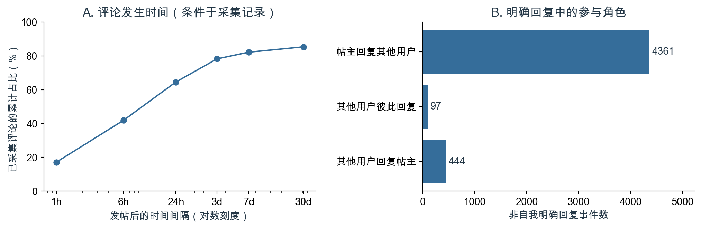
图13 已采集评论的发生时序，以及4,902次非自我明确回复的角色分布。时序分母为全部11,595条去重评论。 在已采集评论中，64.5%发生于发帖后24小时内，82.2%发生于7天内，间隔中位数为11.3小时。这些比例描述记录的相对时间分布；由于各帖评论覆盖情况未知，不能将其视为完整的评论增长曲线。
明确回复的角色 事件数 占明确回复比例 帖主回复其他用户 4,361 89.0% 其他用户回复帖主 444 9.1% 其他用户彼此回复 97 2.0%
帖主发出的回复占89.0%，其他用户彼此回复仅占2.0%。这表明，当前样本的显式回复主要表现为围绕帖主展开的交流。结合根评论指向帖主的建边方式，原网络的互惠性应更多从这种回应结构理解，而非直接解释为用户间普遍存在的横向交流。
有781条回复的直接被回复评论未被采集，但其replyUserId可用，且parentId均能关联到根评论；角色划分因此使用明确用户指向，线程分析使用parentId。
Keep 社区文本与互动网络分析 · 第【待填写】组 25 / 29 25 · 观察窗口敏感性
首周网络的互惠性更高，集中度略低 评论窗口 事件数 节点数 有向边 互惠率 前10接收占比 全部已采集互动 11,511 2,932 4,069 49.6% 54.0% 发帖后7天内 9,451 1,376 2,278 74.1% 48.3%
将每帖发出后的7天作为统一的相对时间截点，得到9,451次非自我互动、1,376个有边节点和2,278条边。相比使用全部已采集互动，首周网络的互惠率由49.6%提高至74.1%，前10位账号的接收占比由54.0%降至48.3%。这表明，晚期评论的纳入会改变网络的规模与结构描述。
根评论线程中的帖主参与 共有6,609条外来根评论；其中3,770个线程内观察到帖主参与回复，占57.0%。在这些有帖主回复的线程中，首次帖主回复距离根评论的中位间隔为2.05小时。这里的参与比例是采集记录中的观测比例，未见回复的线程也可能存在未采集的回应。
对原网络结果的补充解释 两种窗口的节点和边集合不同，指标差异不代表同一群体的互惠行为发生了时间趋势。首周截点减少了跨度极长的晚期评论，却无法补回未采集记录，也不能证明每个帖子都获得了完整的7天观察。网络结论因此应同时注明评论窗口、采集边界和角色构成。
窗口指标见extension_window_networks.csv。回复时延仅在已观测到帖主参与的线程中计算，未将缺失回应当作无限等待或零时延。
Keep 社区文本与互动网络分析 · 第【待填写】组 26 / 29 26 · 解释与建议
研究结论、实践启示与后续设计 证据 可支持的建议 需要进一步验证 五项核心文本特征的联合检验p=0.130，词典测量仍有局限 将内容提示设计为可供选择的表达辅助，鼓励用户描述运动经历、感受或具体问题；其互动效果需另行检验。 内容质量、图片/视频及曝光机会是否改变结果。 原始均值与控制后系数不一致 评估内容方案时按作者或用户分组，记录曝光分母和统一观察窗口。 在可比作者、相近内容下做前瞻随机对照。 互动接收集中，且受抽样影响 对新用户和低反馈用户提供自愿互助场景；先监测是否有人被长期忽略。 用随机用户样本验证集中度；同时衡量回复质量。
扩展实验的综合判断 字面词典、潜在主题和字符文本从不同层面表示内容，结果均未提供稳定、明确的点赞增量证据。逐作者剔除说明积极表达的OLS负向点估计并非单一作者造成，但这一结果仍未通过原多重检验和计数模型比较。评论角色与时间窗口分析则表明，互动结构的解释需要考虑帖主回应及晚期评论的纳入范围。
后续研究设计 后续可在获得平台实验权限后，以作者为单位随机分组，比较“运动过程记录提示”“面向伙伴的问题提示”与常规发布三种情形。以用户为分组单位有助于减少同一作者跨组带来的干扰。建议设置统一的7天观察窗口，记录实际曝光、独立互动用户数、后续发布行为及回复质量，并根据试点方差和最小有意义差异估算所需样本量。该方案尚未实施。
关键局限 100位作者的课程样本与不明抽样机制，不能外推到Keep总体。 正文缺失、图片文字和视频语音缺失，词典未经过独立人工效度验证。 统一采集时间、有效曝光分母和粉丝信息缺失；作者/日期固定效应不能完全处理帖子观察时长及时间变化的受众差异。 观察性回归不能识别因果；评论覆盖不完整，网络边界与根评论建边规则影响结构指标。 研究结论 本研究将帖子文本转换为可复现的结构化特征，并结合固定效应回归与评论网络分析，考察健身社区中的表达与互动。现有证据尚不足以支持特定词汇能够稳定伴随更多点赞；理解互动差异，仍需更完整的内容、曝光及关系数据。
Keep 社区文本与互动网络分析 · 第【待填写】组 27 / 29 27 · 参考资料与复现
参考文献与复现说明 [1] Richardson CR, Buis LR, Janney AW, et al. (2010). An Online Community Improves Adherence in an Internet-Mediated Walking Program. Part 1: Results of a Randomized Controlled Trial. Journal of Medical Internet Research , 12(4), e71. doi:10.2196/jmir.1338 。
[2] statsmodels 官方文档：RegressionResults.get_robustcov_results，cluster参数、小样本修正与t分布推断。官方链接 。访问：2026-10-16；实际使用statsmodels 0.14.2，数值复核采用独立矩阵算法。
[3] 课程材料《内容分析与自然语言处理.pdf》：第10页内容分析的三层问题，第14页预处理，第18页停用词，第24—28页中文分词。作者及年份信息不详。
[4] 课程材料《社交网络分析简介.pdf》：第32—37页网络度分布、点度与中介中心性。
[5] 课程材料《Social Network Influencial.pdf》：第30页入度/出度，第35页中心性与影响力的解释限制。
[6] 课程数据《KeepData_dictionary.pdf》与两份原始CSV；字段字典和数据原样保留在提交包。
[7] scikit-learn官方文档：NMF（1.5系列），用于非负矩阵分解与主题提取。官方链接 。访问：2026-10-17。
[8] scikit-learn官方文档：GroupKFold及交叉验证（1.5系列），用于按作者隔离训练与测试。官方链接 。访问：2026-10-17。
复现与数值核查 项目保存原始输入的校验值、文本编码规则、统计结果和已执行Notebook。独立数值核查采用矩阵算法，重新计算主模型五项系数、聚类标准误、p值及置信区间，并核对评论去重、网络边权和互惠率。报告正文、表格与图形均基于同一results目录生成。
公开仓库提供项目目录与数据放置说明。读者可先查看汇总结果；完成原始数据配置后，按README中的命令运行完整分析。正式PDF由分析报告.html导出，可编辑DOCX由相同的文字与表格生成。
项目地址：https://github.com/Charlie-ChenLin/keep-community-analysis。公开文件范围和输入要求见README.md与DATA.md。
Keep 社区文本与互动网络分析 · 第【待填写】组 28 / 29 28 · 附录
课程要求与小组分工 作业要求 对应成果 小组成员、题目与意义 封面、研究背景；成员留待真实填写 完整过程与描述统计 数据、描述统计与文本分析部分；代码及Notebook 非结构化数据转结构化后回归 文本编码、主题与回归部分；特征表及模型结果 至少一种文本或网络分析 已完成词典内容分析、分词统计及评论网络 解释和建议 回归、预测及网络结果的解释与讨论 Presentation全员参与 23页PPTX、逐页讲稿及建议分工表 PDF、PPT及必要文件打包 提交包ZIP含报告、演示稿、代码、数据、结果与复现说明
汇报分工建议 成员占位 建议负责内容 PPT页码 成员A【待填写】 研究背景、问题与文献核对 1—3 成员B【待填写】 数据清洗、文本编码与主题分析 4—10 成员C【待填写】 回归、样本外预测与稳健性检验 11—17 成员D【待填写】 网络、评论时序、建议与局限 18—23
仅为建议分工，尚非实际贡献记录。请按真实人数和完成情况调整；每名成员均需参与汇报。
课程作业要求提交报告PDF、演示PPT及必要附件，压缩包命名为“第几组-社交媒体分析报告.zip”。原文件注明11月10日23:59提交、11月15日前完成个人互评，但未标明年份，具体时间以课程平台通知为准。
本附录保留组号、成员和学号占位。分工表为待调整建议，须依据实际人数与贡献填写；每位成员应参与汇报，并独立完成个人互评。
Keep 社区文本与互动网络分析 · 第【待填写】组 29 / 29